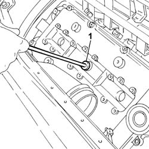

5510D10 SPARK PLUGS - R.R.
- Path
- Procedures > 55 ELECTRICAL EQUIPMENT > 5510 ENGINE IGNITION > 5510D spark plugs and leads > 5510D10 SPARK PLUGS - R.R.
- Kind
- repair procedure (removal / refitting; the operation number is the code)
- Applies to
- engines: 3.0 V6, 3.2 V6; all production periods
- Interactive page
- https://sloeber94.github.io/elrnDB-lThss/en/#/79410
Applies to: engines: 3.0 V6, 3.2 V6; all production periods
 Removing
Removing
 Refitting
Refitting- Open the boot, remove the cover on the left hand side and disconnect the negative battery lead.
See in Op. 1016A42 LEFT CYLINDER HEAD IGNITION COIL COVER - R.R.
See in Op. 5510C16 Left cylinder head IGNITION COILS - R.R.
See in Op. 1048A48 HOSE BETWEEN RESONATOR AND THROTTLE CASING - R.R.
See in Op. 1072B50 Air CHAMBER - R.R.
See in Op. 5510C18 Right cylinder head IGNITION COILS - R.R.
- Blow air into the spark plug housings and remove any impurities or traces of dirt.
1. With the engine cold, undo and remove the spark plugs using a tool constructed from a USAG 279 MG bush and USAG 236 3/8 125 extension or an equivalent tool.

Applies to: engines: 3.0 V6, 3.2 V6; all production periods
- Check the state of the spark plugs and replace them, if necessary.
Applies to: engines: 3.0 V6, 3.2 V6; all production periods
Refitting
Removing- Fit the spark plugs and tighten them to the recommended torque.
 | Value - daNm | Fastening | Component | Ø |
|---|---|---|---|---|
(Cylinder head side) 2.7 | - | SPARK PLUGS | M14 X 1.5 |
See in Op. 5510C18 Right cylinder head IGNITION COILS - R.R.
See in Op. 1072B50 Air CHAMBER - R.R.
See in Op. 1048A48 HOSE BETWEEN RESONATOR AND THROTTLE CASING - R.R.
See in Op. 5510C16 Left cylinder head IGNITION COILS - R.R.
See in Op. 1016A42 LEFT CYLINDER HEAD IGNITION COIL COVER - R.R.
- Connect the negative battery lead, then position the cover and close the boot.